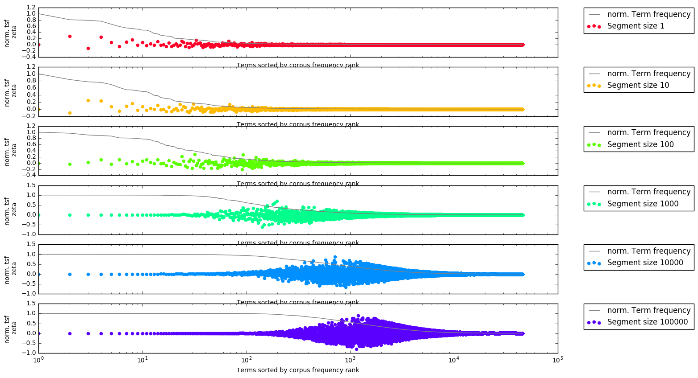

<!doctype html>
<html lang="en">
<head>
<meta charset="utf-8">
<!-- CUSTOMIZE THIS! -->
<title>Zeta at DH2018</title>
<meta name="author" content="Christof Schöch">
<!-- END -->
<meta name="description" content="Slides">
<meta name="apple-mobile-web-app-capable" content="yes">
<meta name="apple-mobile-web-app-status-bar-style" content="black-translucent">
<meta name="viewport" content="width=device-width, initial-scale=1.0, maximum-scale=1.0, user-scalable=no, minimal-ui">
<link rel="stylesheet" href="css/reveal.css">
<link rel="stylesheet" href="css/theme/simple.css" id="theme">
<!-- Code syntax highlighting -->
<link rel="stylesheet" href="lib/css/zenburn.css">
<!-- Printing and PDF exports -->
<script>
var link = document.createElement( 'link' );
link.rel = 'stylesheet';
link.type = 'text/css';
link.href = window.location.search.match( /print-pdf/gi ) ? 'css/print/pdf.css' : 'css/print/paper.css';
document.getElementsByTagName( 'head' )[0].appendChild( link );
</script>
<!--[if lt IE 9]>
<script src="lib/js/html5shiv.js"></script>
<![endif]-->
</head>

<body>
<div class="reveal">
<div class="slides">
<section data-markdown="" data-separator="^\n---\n" data-separator-vertical="^\n--\n" data-charset="utf-8" data-background-image="img/basics/dh2018.png" data-background-size="70px" data-background-position="right 10px top 10px">
<script type="text/template">

<!-- THIS IS WHERE THE CONTENT GOES! -->
<!-- Any section element inside of this container is displayed as a slide -->
# Burrows' Zeta
##Exploring and Explaining Variants and Parameters
<hr/>
<br/>
<br/>
Christof Schöch, Daniel Schlör, Albin Zehe, Henning Gebhard, Martin Becker, Andreas Hotho
<br/>
<br/>**DH2018, Mexico City, June 29, 2018**
<hr/>
<br/>
</img>&nbsp;&nbsp;&nbsp;&nbsp;&nbsp;&nbsp;</img>&nbsp;&nbsp;&nbsp;&nbsp;&nbsp;&nbsp;</img>&nbsp;&nbsp;&nbsp;&nbsp;&nbsp;&nbsp;</img>


---
# Overview
<br/>
1. [Introduction: Distinctiveness](#/2)
2. [What is Zeta?](#/3)
3. [Zeta variants and parameters](#/4)
4. [Text collection, code and raw data](#(5)
5. [Methods and hypotheses](#(6)
6. [Exploratory Approaches](#(7)
7. [Evaluation of Variants and Parameters](#(8)
8. [Interpretability](#(9)
9. [Conclusion and Future Work](#(10)


---
# 1. Introduction:<br/>Distinctiveness

--
## Previous Work
<br/>
* Building on work by: <!-- .element: class="fragment" data-fragment-index="1" --> 
    * John Burrows (2007)
    * Hugh Craig (2009) 
    * David Hoover (2010)
* From our group <!-- .element: class="fragment" data-fragment-index="2" --> 
   * Python implementation of Zeta (github.com/cligs/pyzeta)
   * Application of Zeta to issues of literary subgenres
* Today: Focus on methodology / evaluation <!-- .element: class="fragment" data-fragment-index="3" --> 


--
## Foundations
<br/>
* Omnipresence of contrastive / comparative analysis <!-- .element: class="fragment" data-fragment-index="1" --> 
* Numerous measures of distinctiveness ("keyness") <!-- .element: class="fragment" data-fragment-index="2" -->
* Implementations: Antconc, WordCruncher, TXM, stylo, etc. <!-- .element: class="fragment" data-fragment-index="3" -->

--
## What is distinctiveness?
<br/>
* Relies on the comparison of two groups <!-- .element: class="fragment" data-fragment-index="1" --> 
* Calculates a score for each feature <!-- .element: class="fragment" data-fragment-index="2" --> 
* Simple frequency is not enough (= typical) <!-- .element: class="fragment" data-fragment-index="3" --> 
* Rather: comparatively high/low frequency (= distinctive) <!-- .element: class="fragment" data-fragment-index="4" --> 

--
## Requirements for measures of distinctiveness
<br/>
* Balance absolute and comparative frequency (function words!) <!-- .element: class="fragment" data-fragment-index="1" -->
* Identify features distinctive of the entire group (names!) <!-- .element: class="fragment" data-fragment-index="2" -->
* Indicate a recognisable cut-off (e.g. significance test) <!-- .element: class="fragment" data-fragment-index="3" -->
* Permit high interpretability of results <!-- .element: class="fragment" data-fragment-index="4" -->

--
## Types of measures of distinctiveness
<br/>
1. Expected vs. observed values<br/>(e.g. log-likelihood-ratio) <!-- .element: class="fragment" data-fragment-index="1" -->
2. Weighted frequencies (e.g. tf-idf) <!-- .element: class="fragment" data-fragment-index="2" -->
3. Hypothesis tests for distributions<br/>(e.g. t-Test) <!-- .element: class="fragment" data-fragment-index="3" -->
4. Dispersion measures (e.g. Zeta) <!-- .element: class="fragment" data-fragment-index="4" -->


---
# 2. What is Zeta?

--
## Zeta: Basis
<br/>
* two groups of documents: <br/>target group (T), comparison group (C) <!-- .element: class="fragment" data-fragment-index="1" -->
* each document is split into m segments of n words <!-- .element: class="fragment" data-fragment-index="2" -->
* sp_i = segment proportion of word type i <!-- .element: class="fragment" data-fragment-index="3" -->
* calculated for T and C separatedly <!-- .element: class="fragment" data-fragment-index="4" -->

--
## Zeta: Calculation
<br/>
**Zeta<sub>i</sub> = sp<sub>i</sub>(T) - sp<sub>i</sub>(C)**
<br/>
<br/>
* A simple subtraction of the segment proportions <!-- .element: class="fragment" data-fragment-index="1" -->
* Calculated for each word type, sorted by Zeta <!-- .element: class="fragment" data-fragment-index="2" -->

--
## Some properties
<br/>
* Fixed theoretical range (-1.0 through +1.0) <!-- .element: class="fragment" data-fragment-index="1" -->
* Spikey features don't get high Zeta<br/>scores (names) <!-- .element: class="fragment" data-fragment-index="2" -->
* Very widespread features don't get<br/>high Zeta scores (function words) <!-- .element: class="fragment" data-fragment-index="3" -->
* Inherent bias towards mid-range<br/>frequency words (content words) <!-- .element: class="fragment" data-fragment-index="4" -->
* No inherent cut-off point <!-- .element: class="fragment" data-fragment-index="5" -->

--
## Segment proportions and Zeta
<a href="img/fig-1_docprops-und-zetascores_mit-pointer.png"></img></a>


---
# 3. Text collection, data and code

--
## Text collection used
<br/>
* Today: results from a collection of Spanish novels <!-- .element: class="fragment" data-fragment-index="1" --> 
* Date of publication: 1880-1940 <!-- .element: class="fragment" data-fragment-index="2" -->
* 24 novels from Spain, 24 novels from Latin America <!-- .element: class="fragment" data-fragment-index="3" -->
* Source: CLiGS textbox, github.com/cligs/textbox<br/>(Henny 2017 and Calvo Tello 2017) <!-- .element: class="fragment" data-fragment-index="4" -->


--
## Code and raw data
<br/>
* Code: pyzeta, github.com/cligs/pyzeta <!-- .element: class="fragment" data-fragment-index="1" -->
* Raw data: github.com/cligs/projects2018/tree/master/zeta-dh <!-- .element: class="fragment" data-fragment-index="1" -->

---
# 4. Methods and Hypotheses


---
# 5. Parameters and variants

--
## Relevant parameters
<br/>
* Segment size: m words <!-- .element: class="fragment" data-fragment-index="1" -->
* (Sampling method for the segments) <!-- .element: class="fragment" data-fragment-index="2" -->

--
## Possible variants of Zeta
<br/>
* use relative frequencies instead of segment proportions <!-- .element: class="fragment" data-fragment-index="1" -->
* use division instead of subtraction <!-- .element: class="fragment" data-fragment-index="2" -->
* use log-transformed values instead of untransformed values <!-- .element: class="fragment" data-fragment-index="3" -->

--
## Overview of variants
<br/>
<a href="img/variants.png"></img></a>


--
## Possible desired effects
<br/>
* avoid inherent limitation<br/>of maximal Zeta score to sp_i <!-- .element: class="fragment" data-fragment-index="1" -->
* improve distinctiveness <!-- .element: class="fragment" data-fragment-index="2" -->
* maintain interpretability <!-- .element: class="fragment" data-fragment-index="3" -->


---
# 6. Explorative Approaches

--
## Zeta and segment size
<a href="img/image3.png"></img></a>


---
# 7. Variants and Evaluation


--
## Classification Task: Overview
<br/>
</img>
<br/>
<small>Classification task: linear SVM classifier using 40 most distinctive words, <br/>three-fold cross-validation; tf-idf Baseline 0.49</small>

--
## Classification task: details
<a href="img/image1.png"></img></a>
<br/>
<small>Zeta variants (rows) and parameters (columns)</small>


---
# 8. Interpretability

--
## 
<br/>
* Better performance and robustness is nice
* But does interpretability remain high?
* Is there an trade-off between interpretability and performance?


---
# 9. Conclusion and Future Work

--
## Results
<br/>
* A more precise understanding of Zeta <!-- .element: class="fragment" data-fragment-index="1" -->
    * relation between segment proportions and Zeta
    * relation between segment length and Zeta
    * motivated variant of Zeta<br/><br/>
* Zeta variants  <!-- .element: class="fragment" data-fragment-index="2" -->
    * sd2 (log2-Zeta) increases classification performance and robustness  
    * but we don't know about interpretability yet

--
## Next steps
<br/>
* Operationalize "interpretability"<!-- .element: class="fragment" data-fragment-index="2" -->
* Systematic evaluation of Zeta and established measures of keyness using the same datasets and the same evaluation methods <!-- .element: class="fragment" data-fragment-index="3" -->


--
## Many thanks! / ¡Muchas gracias!
<br/>
<br/>
**References**
<small>

* Burrows, John F. (2007). "All the way through: testing for authorship in different frequency strata". _Literary and Linguistic Computing_, 22(1): 27-48.
* Gries, Stephan. "Dispersions and adjusted frequencies in corpora". *International Journal of Corpus Linguistics* 13:4 (2008), 403–437. 
* Hoover, David L. “Teasing out Authorship and Style with T-Tests and Zeta.” In _Digital Humanities Conference_. London, 2010. http://dh2010.cch.kcl.ac.uk/academic-programme/abstracts/papers/html/ab-658.html.
* Lijffijt, Jefrey et al. “Significance Testing of Word Frequencies in Corpora.” _Digital Scholarship in the Humanities_ 31, no. 2 (2014): 374–97. doi:10.1093/llc/fqu064.
* Oakes, Michael P. _Statistics for Corpus Linguistics_. Edinburgh: Edinburgh Univ. Press, 1998.
* Rayson, Paul, and R. Garside. “Comparing Corpora Using Frequency Profiling.” In _Proceedings of the Workshop on Comparing Corpora_, 1–6. Hong Kong: ACM, 2000.
* Schöch, Christof. „Zeta für die kontrastive Analyse literarischer Texte. Theorie, Implementierung, Fallstudie“, in: _Quantitative Ansätze in den Literatur- und Geisteswissenschaften_, hg. Toni Bernhard et al. Berlin: de Gruyter, 2018. https://www.degruyter.com/view/books/9783110523300/9783110523300-004/9783110523300-004.xml

<p><br/>With special thanks to pygal and reveal.js</p>


</small>


--
<br/>
<br/>
<br/>
<br/>
<br/>
<br/>
<br/>
<br/>
<hr/>
<p>Christof Schöch, 2018</p>
<p><a href="https://christofs.github.io/">christofs.github.io</a></p>
<p><a href="https://creativecommons.org/licenses/by/4.0/">CC-BY 4.0</a><br/></p>
<hr/>
<br/>
<br/>
</script>
</section>


<!-- DON'T TOUCH UNLESS YOU KNOW WHAT YOU'RE DOING :-) -->
</div>
<script src="lib/js/head.min.js"></script>
<script src="js/reveal.js"></script>
<script>
// Full list of configuration options available at:
// https://github.com/hakimel/reveal.js#configuration
Reveal.initialize({
    controls: true,
    progress: true,
    slideNumber: true,
    history: true,
    center: true,
    transition: 'slide', // none/fade/slide/convex/concave/zoom
    // Optional reveal.js plugins
    dependencies: [
        { src: 'lib/js/classList.js', condition: function() { return !document.body.classList; } },
        { src: 'plugin/markdown/marked.js', condition: function() { return !!document.querySelector( '[data-markdown]' ); } },
        { src: 'plugin/markdown/markdown.js', condition: function() { return !!document.querySelector( '[data-markdown]' ); } },
        { src: 'plugin/highlight/highlight.js', async: true, callback: function() { hljs.initHighlightingOnLoad(); } },
        { src: 'plugin/zoom-js/zoom.js', async: true },
        { src: 'plugin/notes/notes.js', async: true }
        ]
    });
Reveal.configure({ slideNumber: 'c' });
</script>
</body>
</html>
